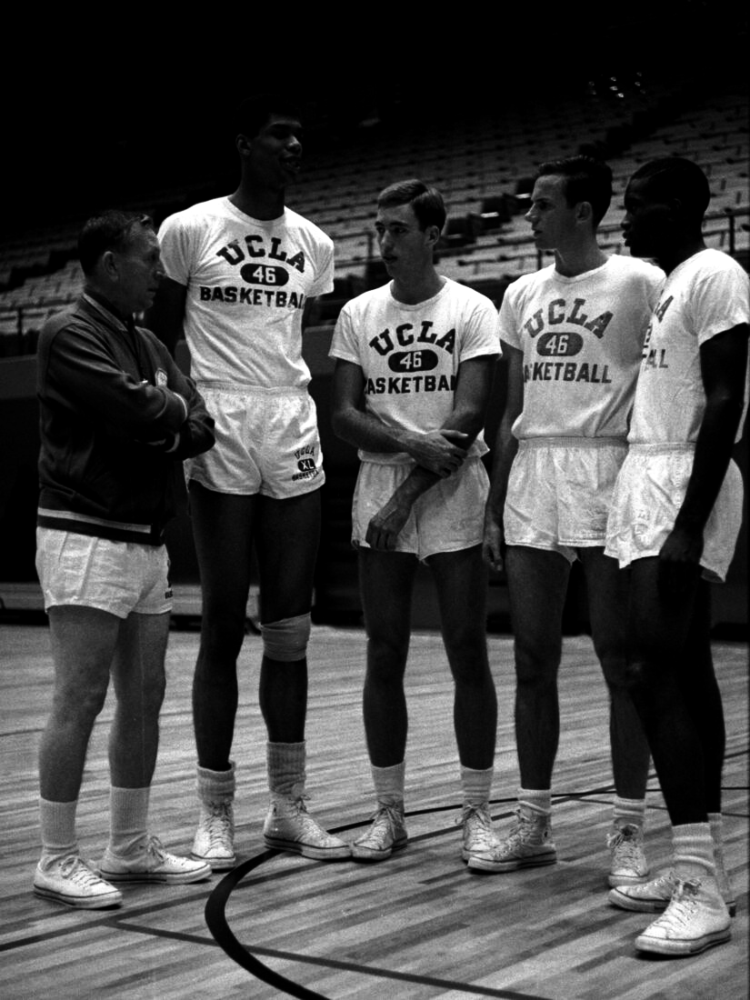

UCLA, anuario Southern Campus 1960 · dominio público

Los Angeles Times · UCLA Library · CC BY 4.0
1
Una arruga
2
Una ampolla
3 · LA SEMANA
Un entreno perdido
0
Títulos NCAA de UCLA con Wooden, 1964–1975
UCLA, 1948–1975 · foto: anuario de UCLA, dominio público